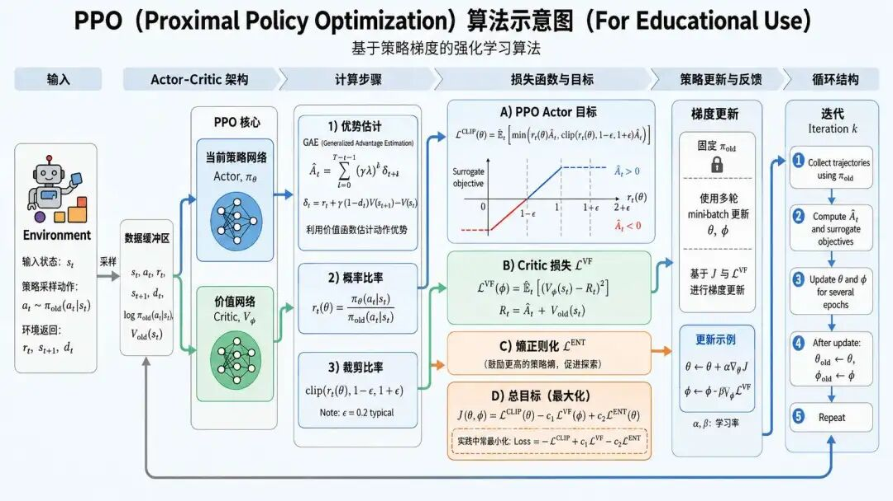
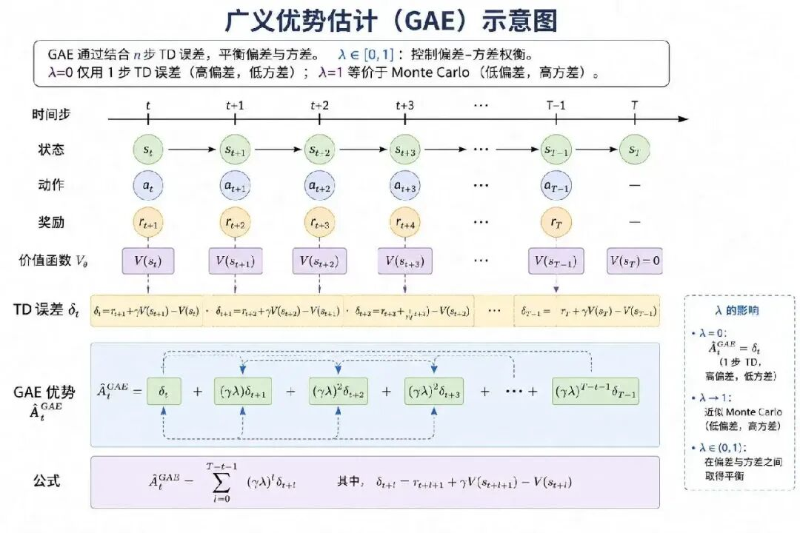

"简单是可靠的终极形式"--约翰·舒尔曼（John Schulman），PPO作者
TRPO算法推出的KL散度约束方法，在较大程度上为策略更新提供了稳定性，但是TRPO的计算过程太复杂了，光是二阶优化就需要大量计算，以及后续还需要结合共轭梯度法、回溯线搜索等...
因此，OpenAI在2017年发表了论文《Proximal Policy Optimization Algorithms》，也即：PPO，近端策略优化算法。
它的目的是在保留TRPO稳定性的同时，简化TRPO的实现（它仅需一阶优化）、提升样本利用率，并支持高维状态/动作空间，如机器人控制、语言模型RLHF。
PPO称之为"近端策略优化算法"，我们看看"近端"是什么意思？它指空间或数值上的邻近性，强调新旧策略之间的差异应保持在较小范围内。
限制新旧策略差异，避免策略突变。核心机制是Clipped Surrogate Objective（裁剪替代目标函数），通过对目标函数进行裁剪，使得当新旧策略的概率比 $r_t(\theta) = \frac{\pi_\theta(a_t|s_t)}{\pi_{\theta_{\text{old}}}(a_t|s_t)}$ 超出区间 $[1-\epsilon, 1+\epsilon]$（通常 $\epsilon=0.2$）时不再贡献梯度。
其实还是之前提到的"信赖域"（Trust Region）那一套，让算法仅在当前策略的局部可信区域内进行优化，避免大幅偏离导致训练崩溃。
那么PPO信赖域和TRPO的信赖域有什么区别呢？它为何能够做到更加高效？根据论文，PPO提供了两种约束策略更新的方法，一种是 PPO-Clip，裁剪目标函数；另外一种是PPO-Penalty，自适应KL约束。
工业界主流实现以PPO-Clip为主，我们也聚焦讲解PPO-Clip，裁剪目标函数。
$$ L(\theta, \phi) = \underbrace{\text{裁剪目标函数}(\theta)}_{\text{策略损失}} - c_1 \underbrace{\mathbb{E}_t \left[ (V_\phi(s_t) - R_t)^2 \right]}_{\text{值函数损失}} + c_2 \underbrace{\mathbb{E}_t \left[ H(\pi_\theta(s_t)) \right]}_{\text{熵正则项}} $$
我们先来看看裁剪目标函数（Clipped Surrogate Objective）的定义：
$$ L^{CLIP}(\theta) = \mathbb{E}_t \left[ \min \left( \underbrace{r_t(\theta)A_t}_{\text{未裁剪项}}, \underbrace{\text{clip}(r_t(\theta), 1 - \epsilon, 1 + \epsilon)A_t}_{\text{裁剪项}} \right) \right] $$其中 $r_t = \frac{\pi_\theta(a_t|s_t)}{\pi_{\text{old}}(a_t|s_t)}$ 为新旧策略的概率比，通过裁剪操作将策略更新约束在 $[1 - \epsilon, 1 + \epsilon]$ 对应的可信范围内，无需显式计算KL散度或解约束问题。
$r_t$ 也称为重要性权重，用于从旧策略的数据中估计新策略的期望值，通过权重校正解决新旧策略分布差异问题，是Clip机制的核心，也是数据复用的体现。
正是基于重要性采样的权重校正，PPO才能复用旧策略采集的数据进行多次策略更新（通常3-10次），显著提升样本效率。
PPO通过 min 操作取裁剪项与未裁剪项的最小值，本质上是取悲观估计：当 $A_t>0$ 时防止过度上调，当 $A_t<0$ 时防止过度下调，从而约束最终更新幅度。
(1) 未裁剪项：$r_t(\theta)A_t$
(2) 裁剪项：$\text{clip}(r_t(\theta), 1 - \epsilon, 1 + \epsilon)A_t$
然后再来分析Clip函数，通过结合优势函数 $A_t$，PPO实现了一种基于优势符号的不对称裁剪机制：
(1) 当 $A_t$ > 0（鼓励动作）
(2) 当 $A_t < 0$（惩罚动作）
最终通过min函数，取裁剪项和未裁剪项两者的最小值，作为最终的损失。
PPO中运用的另一大先进算法是针对优势函数的改进，即GAE，广义优势估计。 之前我们学习到的优势函数：用于衡量特定动作相对于平均表现的优劣（即"动作比平均策略好多少"）。这种方法存在方差和偏差平衡不足的问题：
而GAE创造性的通过加权融合多步TD误差，实现了参数在偏差与方差之间动态权衡。
广义优势估计公式为：
$$ A_t^{\text{GAE}(\gamma, \lambda)} = \sum_{k=0}^{\infty} (\gamma \lambda)^k \delta_{t+k} $$或：
$$ A_t = \delta_t + \gamma \lambda A_{t+1} $$注释版：
$$ \underbrace{A_t}_{\text{时刻}t\text{优势函数}} = \underbrace{\delta_t}_{\text{TD误差}} + \underbrace{\gamma}_{\text{折扣因子}} \underbrace{\lambda}_{\text{GAE衰减系数}} \underbrace{A_{t+1}}_{\text{时刻}t+1\text{优势函数}} $$也即：GAE优势 = 当前时刻的TD误差 + （折扣因子 × 衰减系数） × 下一时刻的GAE优势
实际上上面这两个公式是等价的：对递归公式 $A_t = \delta_t + \gamma \lambda A_{t+1}$ 进行展开：
$$ \begin{align*} A_t &= \delta_t + \gamma\lambda A_{t+1} \\ &= \delta_t + \gamma\lambda (\delta_{t+1} + \gamma\lambda A_{t+2}) \\ &= \delta_t + \gamma\lambda\delta_{t+1} + (\gamma\lambda)^2\delta_{t+2} + (\gamma\lambda)^3\delta_{t+3} + \cdots \\ &= \sum_{k=0}^{\infty} (\gamma\lambda)^k \delta_{t+k} \end{align*} $$其中 $\delta_t$ 代表TD误差： $\delta_t = r_t + \gamma V(s_{t+1}) - V(s_t)$
其中衰减系数（λ）是实现融合多步TD误差的关键，它控制多步融合的权重：
| λ 取值 | 估计类型 | 特性 | 适用场景 |
|---|---|---|---|
| 0 | 单步TD | 高偏差、低方差 | 简单环境，需快速收敛 |
| 0.9~0.95 | 多步TD（GAE推荐） | 偏差与方差平衡 | 多数任务（如机器人控制） |
| 1 | 蒙特卡洛近似 | 低偏差、高方差 | 短轨迹或精确奖励环境 |

实际应用：GAE实现在PPO中，GAE估计的优势函数直接代入裁剪目标函数，参与策略梯度的计算：
$$ \nabla J(\theta) = \mathbb{E} \left[ \sum_t A_t^{\text{GAE}} \nabla_\theta \log \pi_\theta(a_t|s_t) \right] $$注释版：
$$ \underbrace{\nabla J(\theta)}_{\text{策略目标函数梯度}} = \underbrace{\mathbb{E}}_{\text{期望运算}} \left[ \underbrace{\sum_t}_{\text{对时间步}t\text{求和}} \underbrace{A_t^{\text{GAE}}}_{\text{GAE估计的优势函数}} \cdot \underbrace{\nabla_\theta \log \pi_\theta(a_t|s_t)}_{\text{策略对数概率梯度}} \right] $$GAE提供低噪声的梯度信号，加速收敛。为减少方差，常对GAE结果标准化：$\hat{A}_t = \frac{A_t - \mu_A}{\sigma_A}$，其中 $\mu_A, \sigma_A$ 为当前批数据的均值和标准差。
PPO另一大创新是多目标联合优化，通过加权融合三个损失函数，通过平衡策略性能、价值拟合精度和探索能力，这是PPO高效性与稳定性的核心所在，它包含了策略优化、价值估计和探索激励三大损失函数。
$$ L(\theta, \phi) = \underbrace{\text{裁剪目标函数}(\theta)}_{\text{策略损失}} - c_1 \underbrace{\mathbb{E}_t \left[ (V_\phi(s_t) - R_t)^2 \right]}_{\text{值函数损失}} + c_2 \underbrace{\mathbb{E}_t \left[ H(\pi_\theta(s_t)) \right]}_{\text{熵正则项}} $$$c_1$（通常取 [0.5, 1.0] 之间），用于平衡值函数更新的强度； $c_2$（通常取 [0.01, 0.05] 之间），用于控制探索强度。
PPO中的策略损失，即裁剪目标函数，我们上面已经讲解过了，这里略过不讲。
值函数的目标主要是用于优化价值网络，使其准确预测状态价值，通过最小化时序差分误差（TD Error）更新：
$$ L^{\text{VF}}(\phi) = \mathbb{E}_t \left[ (V_\phi(s_t) - R_t)^2 \right], \quad R_t = \sum_{k=0}^{T-t} \gamma^k r_{t+k} $$注释版：
$$ \underbrace{L^{\text{VF}}(\phi)}_{\text{价值函数损失}} = \underbrace{\mathbb{E}_t}_{\text{对时间步}t\text{取期望}} \left[ \left( \underbrace{V_\phi(s_t)}_{\text{参数}\phi\text{下的状态价值}} - \underbrace{R_t}_{\text{累计折扣回报}} \right)^2 \right], \quad \underbrace{R_t}_{\text{时刻}t\text{累计折扣回报}} = \underbrace{\sum_{k=0}^{T-t}}_{\text{对剩余步数求和}} \underbrace{\gamma^k}_{\text{折扣因子的时序衰减项}} \underbrace{r_{t+k}}_{\text{时刻}t+k\text{的即时奖励}} $$它是独立优化目标对应 Critic 网络的均方误差优化。部分实现（如DeepSpeed Chat）会添加值函数裁剪，限制Critic的更新幅度。
我们接下来重点说说熵正则项损失，我们先来理解熵的概念。
熵（Entropy）是信息论中衡量随机变量不确定性的指标。在强化学习中，策略网络输出的动作概率分布 $π(a|s)$ 的熵定义为：
$$ H(\pi) = -\sum_{a} \pi(a|s_t) \log \pi(a|s_t) $$注释版：
$$ \underbrace{H(\pi)}_{\text{策略动作分布的熵}} = - \underbrace{\sum_{a}}_{\text{对所有可能动作}a\text{求和}} \underbrace{\pi(a|s_t)}_{\text{状态}s_t\text{下动作}a\text{的概率}} \cdot \underbrace{\log \pi(a|s_t)}_{\text{动作概率的对数}} $$在PPO中，熵正则化损失表示为：
$$ L^{ENT}(\theta) = -\mathbb{E}_t \left[ H(\pi_\theta(s_t)) \right] $$注释版：
$$ \underbrace{L^{\text{ENT}}(\theta)}_{\text{熵正则化损失函数}} = - \underbrace{\mathbb{E}_t}_{\text{对时间步}t\text{取期望}} \left[ \underbrace{H(\pi_\theta(s_t))}_{\text{策略}\pi_\theta\text{在状态}s_t\text{下的动作分布熵}} \right] $$实际优化时，该项以负权重 $-c_2$ 加入总目标函数：
$$ L_{\text{total}} = L^{CLIP} - c_1 L^{VF} - c_2 \mathbf{L}^{\mathbf{ENT}} $$$c_2$：熵正则化权重（通常取 0.01），用于平衡探索与收敛速度：
由于 $L^{ENT}$ 定义为负熵，因此 $-c_2 L^{ENT} = c_2 \mathbb{E}_t[H(\pi)]$，最大化总目标即等价于最大化策略熵。
熵正则项的核心作用在于增加探索性防早熟收敛，在训练初期，策略易偏向高奖励动作，导致陷入局部最优。
熵正则化通过惩罚低熵（高确定性）的策略，强制动作分布更分散，鼓励尝试新动作；
这就使得在复杂环境如游戏关卡或语言生成任务中，高熵策略能覆盖更多状态-动作空间，避免遗漏潜在最优路径。具体怎么做呢？
开始时，$c_2$ 设置得较高（如0.01-0.05）。这意味着在总的损失函数中，最大化熵（即增加随机性）占据了更重要的地位。这能有效鼓励智能体尝试更多不同的动作，避免过早地陷入某个看似不错但可能是局部最优的策略中，从而更全面地了解环境。
随着训练步数增加，$c_2$ 会线性衰减。此时，最大化累积奖励的目标主导了策略更新。智能体会更倾向于选择之前已验证能带来高回报的动作，也就是从广泛的探索转向精细的利用，使策略收敛到最优解附近。
熵正则项能有效鼓励探索，背后有坚实的数学原理支持。
首先是最大熵原则，熵在信息论中度量的是不确定性。当所有动作被选中的概率相等（即均匀分布）时，熵达到最大值 $H_{max} = \log |A|$（其中 |A| 是动作空间的大小）。熵正则项与策略目标共同作用，在追求高奖励的同时，把策略分布往更分散的方向拉，从而促进探索。
其次是梯度方向，在梯度下降中，熵正则项的梯度 $\nabla H(\pi)$ 推动策略分布朝更均匀的方向更新。它与策略损失的梯度一起，在"利用高奖励动作"和"保留分布随机性"之间找到平衡点。即使某个动作在当前看来不是最优，也可能因为熵正则项的作用而获得概率提升，这就为探索潜在优质动作创造了机会。
三项损失通过分工协作与动态平衡实现高效稳定的策略优化：
1、策略与Critic的闭环反馈： Critic的 $L^{VF}$ 提供低方差优势估计 $A_t$ 用于指导 $L^{CLIP}$ 定向优化策略；策略更新后生成新数据 ，可反过来提升Critic的拟合精度。
2、探索与开发的权衡： 熵项 $L^{ENT}$ 确保策略保持探索性，避免 $L^{CLIP}$ 因过度利用当前高优势动作而陷入局部最优。
3、约束机制的双保险： $L^{CLIP}$ 的裁剪防止策略突变，$L^{ENT}$ 的熵惩罚避免策略退化（如确定性策略导致探索停滞），二者共同保障稳定性。
类比理解：如同篮球教练训练球员：
三项损失通过分工协同，使PPO在稳定性（裁剪+Critic）、效率（多轮更新）和鲁棒性（熵探索）上显著超越经典Actor-Critic，成为DRL和RLHF领域的标准算法。其设计体现了"在激进探索与谨慎更新间找到平衡"的强化学习核心思想，如同经验丰富的登山者——步伐太小时无法登顶，太大时可能坠崖。
以LLM微调为例，完整的运用一次PPO算法，提供对应的伪代码
算法：PPO (近端策略优化)
输入：初始策略参数θ, 初始价值函数参数φ, 裁剪阈值ε, 折扣因子γ, 熵系数c₂, KL惩罚系数β(可选)
输出：优化后的策略参数θ*
初始化策略网络（Actor）π_θ
初始化价值网络（Critic）V_φ
复制旧策略参数：θ_old ← θ
for 迭代轮次 = 1 to N do:
# 阶段1：数据收集（与环境交互）
使用当前策略π_θ与环境交互，收集轨迹数据D
数据包括：状态s_t, 动作a_t, 奖励r_t, 下一状态s_{t+1}, 终止标志done_t
# 阶段2：计算回报和优势函数
for 每个轨迹中的每个时间步t do:
计算折扣回报 R_t = Σ_{k=0}^{T-t} γ^k * r_{t+k}
使用Critic网络计算状态价值 V(s_t) = V_φ(s_t)
计算优势估计 A_t = R_t - V(s_t) # 简化版，实际常用GAE
(可选) 对优势估计A_t进行标准化：(A_t - mean(A)) / (std(A) + ε_small)
# 保存旧策略的动作概率（用于后续计算概率比）
计算旧策略的动作概率分布：π_θ_old(a_t|s_t)
# 阶段3：策略优化（多次epoch更新）
for epoch = 1 to K do: # 通常K=3~10
# 3.1 前向传播计算新策略概率
对新策略π_θ，计算动作概率分布：π_θ(a_t|s_t)
# 3.2 计算概率比
概率比 r_t(θ) = π_θ(a_t|s_t) / π_θ_old(a_t|s_t)
# 3.3 计算PPO-Clip损失
clipped_ratio = clip(r_t(θ), 1-ε, 1+ε)
L_clip(θ) = E[ min( r_t(θ) * A_t, clipped_ratio * A_t ) ]
# 3.4 计算价值函数损失
L_value(φ) = MSE( V_φ(s_t), R_t ) # 或使用Huber损失
# 3.5 计算熵正则项
H(π_θ) = - Σ_a π_θ(a|s_t) * log π_θ(a|s_t) # 离散动作
或 H(π_θ) = - ∫ π_θ(a|s_t) log π_θ(a|s_t) da # 连续动作
L_entropy(θ) = H(π_θ)
# 3.6 (可选) 计算KL散度惩罚项
if 使用KL惩罚:
KL(θ) = KL[ π_θ(·|s_t) || π_ref(·|s_t) ] # 或与旧策略的KL散度
L_kl(θ) = β * KL(θ)
# 3.7 计算总损失
L_total = -L_clip(θ) + c1 * L_value(φ) - c2 * L_entropy(θ)
if 使用KL惩罚:
L_total = L_total + L_kl(θ)
# 3.8 反向传播更新参数
计算梯度: ∇_θ L_total, ∇_φ L_value
使用优化器（如Adam）更新:
θ ← θ - lr_actor * ∇_θ L_total
φ ← φ - lr_critic * ∇_φ L_value
end for
# 阶段4：更新旧策略
θ_old ← θ # 为下一轮数据收集准备
end for回过头看，PPO的高明之处恰恰在于它没有去死磕TRPO那种严格的理论保证，而是以一个简单的裁剪操作，换来了几乎同等的稳定性和远低于前者的计算成本：即裁剪目标函数守住每一步更新的边界，GAE在偏差与方差之间寻求权衡，多目标损失则让策略、价值与探索三者彼此牵制、协同推进。三种各司其职的机制，最终构成了一套既能稳步前进、又不致偏离的更新节奏。
正是这种保守扎实的设计取向，使PPO从众多强化学习算法中脱颖而出，成为当下大模型对齐（RLHF）中最常被采用的方案之一可以说，理解了PPO，便把握住了现代AI逐步向人类偏好对齐的一条主线。而当这套算法应用于庞大的语言模型时，新的挑战与改进仍在持续迭代，这些内容我们下一篇继续展开。
近端策略优化（PPO, Proximal Policy Optimization） OpenAI 于 2017 年提出的策略梯度算法，旨在保留 TRPO 信赖域思想所带来的稳定性的同时，将二阶优化简化为一阶优化，并显著提升样本利用率。"近端"二字强调新旧策略在参数空间或概率分布上的邻近性——更新只在当前策略的局部可信区域内进行，从而避免大幅偏离导致的训练崩溃。其简洁高效的特性使之成为深度强化学习与 RLHF 领域的事实标准算法。
裁剪替代目标函数（Clipped Surrogate Objective） PPO-Clip 的核心机制，通过对目标函数本身施加裁剪，使得当新旧策略概率比 $r_t(\theta)$ 超出 $[1-\epsilon, 1+\epsilon]$ 区间时不再贡献梯度。它以一个简单的截断操作，替代了 TRPO 中复杂的 KL 散度显式约束，在工程实现的简洁性与策略更新的稳定性之间取得了优雅的平衡。
重要性采样（Importance Sampling） 通过引入新旧策略的概率比 $r_t(\theta) = \pi_\theta(a_t|s_t) / \pi_{\theta_{\text{old}}}(a_t|s_t)$ 作为权重校正项，从旧策略采集的数据中估计新策略的期望值。该机制使 PPO 能够对同一批采样数据进行多轮（通常 3–10 次）策略更新，是其样本效率显著高于传统在策略算法的根本原因。
优势函数（Advantage Function, A) 衡量在状态 $s_t$ 下采取动作 $a_t$ 相对于平均表现的优劣程度，定义为 $A_t = Q(s_t, a_t) - V(s_t)$。其符号决定了策略更新的方向：$A_t > 0$ 时提升该动作的概率，$A_t < 0$ 时降低该动作的概率。优势函数将"动作的绝对价值"转化为"动作的相对价值"，是策略梯度算法降低方差的关键工具。
广义优势估计（GAE, Generalized Advantage Estimation） 通过对多步 TD 误差按 $(\gamma\lambda)^k$ 进行指数加权融合，在偏差与方差之间实现动态权衡的优势估计方法。衰减系数 $\lambda$ 是关键调节参数：$\lambda=0$ 时退化为单步 TD（高偏差、低方差），$\lambda=1$ 时趋近于蒙特卡洛估计（低偏差、高方差），实践中常取 0.95，在二者之间获得良好平衡。
熵正则项（Entropy Regularization） 将策略动作分布的熵 $H(\pi_\theta) = -\sum_a \pi(a|s)\log\pi(a|s)$ 作为正则项加入总目标，通过惩罚过度确定性的策略来鼓励探索。其作用在于防止策略过早收敛至局部最优，尤其在训练初期与高维动作空间中至关重要。配合权重 $c_2$ 的逐步衰减，可实现从"广泛探索"到"精细利用"的平滑过渡。
多目标联合优化（Multi-Objective Joint Optimization） PPO 将策略损失、值函数损失与熵正则项三者加权融合为统一的优化目标：$L = L^{CLIP} - c_1 L^{VF} + c_2 \mathbb{E}_t[H(\pi)]$。三项分别承担"策略改进"、"价值拟合"与"探索激励"的职责，通过分工协作与动态平衡，使 PPO 在稳定性、样本效率与鲁棒性上同时获得优势，体现了"在激进探索与谨慎更新间寻求平衡"的强化学习核心思想。